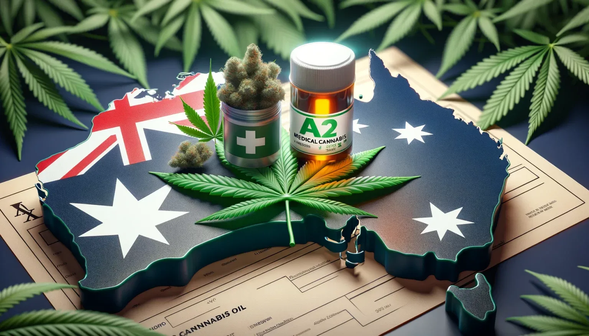

On this page
- 01Overview of Medical Cannabis in Australia
- 02Importing Medical Cannabis Into Australia
- 03Special Access Scheme (SAS) & Authorized Prescriber (AP) Pathways
- 04GMP Clearance
- 05Manufacturing Cannabis Products in Australia
- 06ODC Narcotic Manufacture Licence
- 07Medicinal Cannabis Licence (Manufacturing, Cultivation, & Processing)
- 08Why Work With CannDelta?
- 09Frequently Asked Questions
- 10Connect with CannDelta Experts

Overview of Medical Cannabis in Australia
Access to medical cannabis was legalized in Australia in 2016, and it is regulated by the Therapeutic Goods Administration (TGA).
Medical cannabis is a highly regulated substance in Australia and it is only available to qualifying patients. Patients need a prescription from a doctor/medical specialist to get medical cannabis, or they must participate in a clinical trial.
After speaking to a doctor or specialist, the individual seeking medical cannabis must wait for all required forms to be completed and submitted to the government by the healthcare professional.
After approval from the TGA, medical cannabis patients in Australia can visit a pharmacy with their prescription and obtain the prescribed medical cannabis product. A person’s ability to obtain medical cannabis depends on the laws in their specific state or territory.

Importing Medical Cannabis Into Australia
Medical cannabis can be imported into Australia for prescribed distribution. All imports must come from a facility with GMP clearance. In accordance with Australian cannabis law, any finished cannabis products that are imported, exported, manufactured, or supplied must be registered or listed on the Australian Register of Therapeutic goods (ARTG) unless an exception applies, such as an exemption, approval, or authority under the Therapeutic Goods (TG) Act.
The only other exception is the importation of raw cannabis material. Raw cannabis material does not need to be entered in the ARTG since it is not intended for patient consumption. Therefore, it must not be pre-packaged for supply to patients or in dosage form. This exemption applies only to the starting material that is later turned into a cannabis product.
Australia’s medical cannabis regulations products can be imported for patient use following the Personal Importation Scheme.
Alternatively, medical cannabis products can be imported by a medical practitioner on a patient’s behalf. The doctor importing cannabis must be licenced under the Customs Act. The application form can be found here.
Raw cannabis material is cannabis that has not been processed or packaged so that it’s ready for patient use. It is the starting material that is later turned into a cannabis product. Starting material is not meant for distribution to patients.
Since starting material is not intended for patient use, not pre-packaged, and not formulated in a dosage form, it does not need to be entered into the ARTG.
GMP Clearance
All imported medicinal cannabis products released for supply from July 1, 2023, must be manufactured in accordance with Good Manufacturing Practice (GMP) standards.
The TGA will accept proof of GMP issued by authorities in certain countries, including the United Kingdom, European Union members, Israel, South Africa, and Canada. For products from other countries, a GMP inspection by the TGA may be required. The process of obtaining GMP clearance as an overseas manufacturer can take place in a variety of different ways depending on the manufacturers intentions. Learn more about GMP certification and clearance here.
Anyone interested in applying should seek further clarification from the TGA and ODC Importation Requirements.
Manufacturing Cannabis Products in Australia
There are two different licensing pathways that organizations seeking to manufacture their own cannabis products can follow. The first path requires two different medical marijuana manufacturing licences in Australia. Each of them serves a different purpose and operates under different legislation, the Therapeutic Goods Administration (TGA) and Office of Drug Control (ODC). You must have both licences to become a medical cannabis product manufacturer in Australia.
- The TGA issues the ‘Licence to manufacture therapeutic goods (GMP)’ This licence is focused on quality and Good Manufacturing Practices.
- The ODC issues the ‘Narcotic manufacture licence’ This licence is focused on what is being produced and the quantities being produced.
TGA GMP Licence
This licence is required to ensure all manufacturing activities meet quality and compliance standards in regard to:
- The manufacturing of an Active Pharmaceutical Ingredient (API).
- Market Authorization.
- Production, processing, assembling, packaging, labeling, storage, sterilization, testing, and release for supply.
- Conducting clinical trials
Upon receiving an application for a GMP certification license in Australia, your facility will be inspected within three months. The time from inspection to licensing will vary based on how quickly and effectively the manufacturing site addresses any deficiencies identified during the inspection.
Overseas manufacturers will also require GMP clearance to have their cannabis products imported into Australia
ODC Narcotic Manufacture Licence
The Narcotic Manufacture Licence regulates the quantities and types of drugs manufactured to manage national stock levels and ensure compliance. This includes examining the moral character and intent of license holders, and the security of facilities.
A narcotic manufacture license is required under the Narcotic Drugs Act 1967 for activities such as:
- Obtaining an extract (including tinctures) from cannabis or cannabis resin.
- Separating or obtaining cannabinoids (e.g., cannabidiol, THC) from the extract.
- Converting or transforming cannabinoids in the extract.
Note that a cultivation license under the Narcotic Drugs Act 1967 is still required for cultivating cannabis.
Medicinal Cannabis Licence (Manufacturing, Cultivation, & Processing)
The Medicinal Cannabis License is the second licensing pathway available for organizations aiming to manufacture medical cannabis products in Australia.
Getting approval to manufacture, cultivate, or process medical cannabis products in Australia requires the appropriate approvals, licences, and permits from the state or territory and local government.
A medicinal cannabis license can allow for either the cultivation (growing) of cannabis plants, the production (separation of cannabis and cannabis resin), or both. It can also include manufacturing activities. These activities can be authorized separately or all under one license. Details about applying for a medicinal cannabis licence can be found here.
There is no limit on the number of licenses that can be granted in Australia. However, international rules state that the total amount produced must not exceed what is needed domestically. Therefore, the number of licensed cultivators will depend on the demand for medicinal cannabis from prescribers and patients.
The application for a Medicinal Cannabis License involves several key sections., including applicant details, whether the applicant is a corporate organization, an individual, or a government agency. Contact details for the person completing and submitting the application, as well as other nominated contacts, and more.
The fit and proper persons section requires details about convictions, civil penalties, revocations, financial background, and the applicant’s reputation, business experience, and connections. Information about the site, authorized activities, and site suitability must be included. Security details, covering physical security and the safety and security of supply, delivery, and transportation, are also required.
Further information to support the application includes arrangements with emergency services, employment details, and additional supporting information.
Additional information may be required due to the multifunctional nature of the medicinal cannabis license. More details can be found here.

Why Work With CannDelta?
Cannabis Licence Applications:
Enter the cannabis market with confidence. Our team provides extensive support in preparing, submitting, and monitoring your cannabis licence application to ensure you remain compliant and competitive.
Our team of compliant marketing experts know the ins and outs of marketing your medical cannabis product and business in Australia. Our focus on marketing excellence ties with our knowledge or TGA compliance will give you a leg-up against competing products and clinics.
Build a strong foundation for your cannabis venture. We create business plans that meet regulatory requirements and set the stage for continuous growth.
Our specialists design comprehensive security plans that protect your assets, meet medical cannabis regulations, and offer peace of mind.
Stay proactive with our thorough site audits. We identify potential issues and provide practical solutions to ensure compliance and efficiency. We also assist with GMP clearance requirements and site inspection preparation for overseas manufacturers.
Standard Operating Procedures:
Enhance your daily operations with a customized operating plan focused on boosting efficiency. We develop SOPs that are clear, compliant with GMP standards, and facilitate smooth business operations.
Employee Staffing and Training Plan:
Our recruitment strategies and customized training programs ensure your team is well-equipped to excel in the cannabis industry.
Fill out a form below to get in touch with our cannabis consultants today!
Frequently Asked Questions
Starting a medicinal cannabis business in Australia can be a challenging process depending on what kind of business you intend to start. If you plan to manufacture, cultivate, or process cannabis in Australia, you will need the appropriate licence and facility required for that specific activity. Only medical practitioners, like doctors, can prescribe medical cannabis to patients for purchase at a pharmacy.
The price of medical cannabis in Australia is dependent on the dosage requirements, the method of consumption, and how much the patient is using cannabis. The median weekly cost of cannabis for patient-only use was $40 AUD.
You can get a medicinal cannabis license that will allow you manufacture, process, or grow cannabis in Australia by applying for a licence online at the ODC’s website. After the application is submitted, it will be processed for 10 working days and assessed for 195 working days. During the assessment period, applicants ay be asked to provide additional information, and a fit and proper assessment of the applicant(s) will be conducted.
Cannabis law in Australia only permits medical cannabis use as prescribed by a medical practitioner. Recreational use is against cannabis law in Australia, as it is a scheduled substance. Illegal possession of cannabis can result in thousands of dollars in fines and/or a prison sentence.
You can become a medicinal grower in Australia by acquiring a medicinal cannabis licence. This application will require a variety of details about your person, business, and intentions. This includes site details, financial details, and more. You will also need to acquire a GMP certified facility that has been inspected and approved by the TGA. Keep in mind that the number of licensed cultivators allowed in Australia will depend on the demand for medicinal cannabis from prescribers and patients.